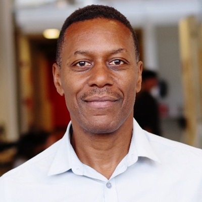

Between 80 and 90 people in the room, by invitation. About 70% are Brazilians working in real estate back home: developers, CEOs, CIOs and fund managers. The rest are American guests and NYU graduate students in real estate. The Brazilians know their own market well. What they want from the day is to see how the American side reads a deal, and what Brazil would have to change to be read the same way.
That is the thread through all five panels. Brazilian projects that would hold up anywhere often fail to reach global institutional capital, and the reason is rarely the return. They are hard to read from outside.
Each panel takes one layer of that problem: the market, the capital stack, the public partner, affordability, and the move from selling units to owning income.
A global investor reads a deal in three layers. First the country: currency, rates, rule of law, the macro story. Then the land: title, zoning, permits, what can be built and how long it takes. Then the deal itself: the contract, the partners, governance, reporting.
Brazil is used to answering the first question. Investors already have a view on the country. The other two layers are where the conversation tends to stall, because the information exists but is not presented in a way an outsider can check.
The goal is to leave the room with a practical picture of what an institutional investor needs to see on paper before saying yes to a Brazilian deal, and where Brazilian sponsors usually fall short.
The capital stack behind a US project and the one behind a Brazilian project are built differently: different costs, different tenors, and different people at each layer. In the US, senior debt, mezzanine, preferred equity and common equity each have deep, specialized markets. In Brazil, much of the stack has historically relied on bank credit, savings-linked funding and the developer's own balance sheet, often financed by sales during construction.
That is starting to change. Real estate credit in Brazil crossed 10% of GDP in 2025, against roughly 70% in the US. In 2023, capital markets instruments (LCI, CRI, LIG, FII) overtook savings deposits for the first time as the largest source of real estate funding in Brazil, and the October 2025 savings reform pushes further in that direction.
The panel should compare how a typical deal is structured in each country today, and discuss what is opening up as global allocators start to look south.
Large urban projects often depend on public land, public infrastructure and private execution closing inside a single transaction. New York has decades of practice with this: development agreements, land disposition, air rights, value capture, and partnerships with agencies like the MTA. São Paulo has its own toolkit, with urban operations, CEPACs and concessions, and a growing pipeline of projects that need private capital.
The panel should show how these deals are structured in each city, who carries which risk at each stage, and what makes a public/private agreement still hold twenty years later, across political cycles.
Matthew opens with a 15-minute presentation on the New York side, then moderates the conversation. The conversation puts the two public agencies side by side: NYCEDC, which runs many of New York's public/private deals, and SP Urbanismo, which does the same job in São Paulo.

Between what it costs to build and what a renter can pay, there is a gap. At the bottom of the market, the US closes it with public money: tax credits (LIHTC), vouchers and subsidized financing. In the middle, workforce housing gets no direct subsidy and has to close the gap through construction cost, unit design and project finance.
Brazil has a large housing program at the bottom of the market, built mostly around ownership. Rental housing, and especially middle-income rental, barely exists as an organized product.
The panel should walk through both paths in the US, what each one asks of the developer and the lender, and what Brazil can realistically take from it.
Brazil builds to sell. Developers launch, sell units during construction, deliver and move on. The income model asks the same developer to keep the building, operate it and report on it for decades. That takes a different company, with different capital, people and systems.
The gap is visible in the numbers. In the US, institutional multifamily is worth about US$2.6 trillion, the largest traditional sector of institutional real estate. In Brazil, there are around 14,000 institutional rental units nationwide, and 72.9% of listed real estate funds (FIIs) are held by retail investors.
The panel should cover what the shift actually costs in capital, operations and reporting, and what has to be true for institutional investors to buy into Brazilian income properties the way they do in the US.